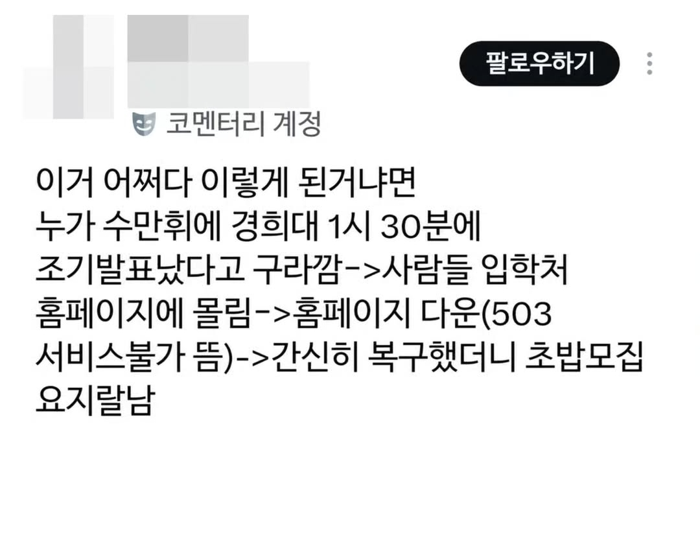
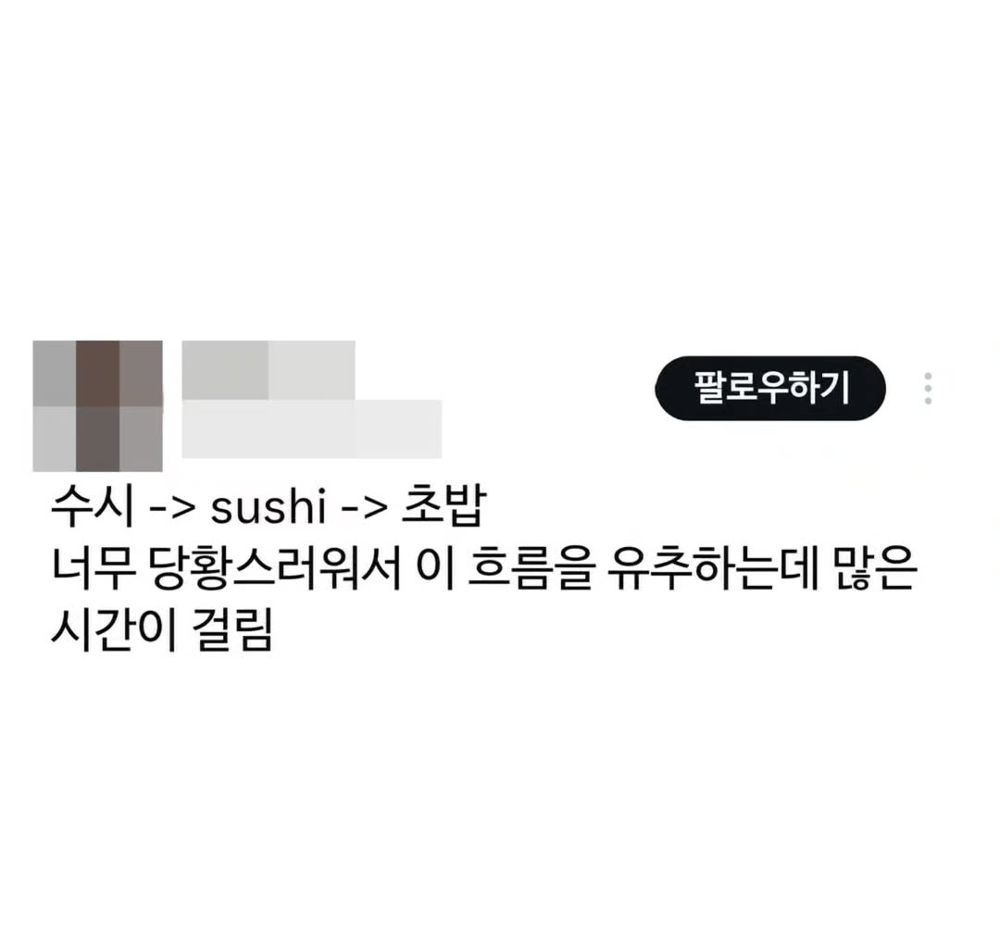

수시모집이 왜 갑자기 sushi가 됐다가 초밥이 됐냐고 ㅋㅋㅋㅋ
애초에 F12 개발자도구로 구라친거니까ㅋㅋ
경희대는 유명한 초밥 맛집임
재료가 싱싱한가요
경희대쪽은 파전이 맛있지
아니 저런거 결재 없이 담당자가 그냥 올리는겨?ㅋㅋㅋㅋ
그냥 서버 털린거 아님?ㅋㅋ
생각보다 전산 배포 체계가 없는 곳이 많음 저기도 저런 일이 자꾸 일어나는거면 검수자가 없는건가 싶네 ㅋㅋ
오늘점심 경희대 앞 회전초밥집으로 모여!!
왜 번역 난거지
수시를 스시로 오타냈다가 맞춤법 검사기 돌린 후 초밥모집으로 바뀌었는데 검수 안하고 그대로 올림
아니 그니까 다른 글자들도 번역났어야 되는데 수시만 영어로 썼을리도 없고
아니 애초에 sushi로 치환된 적이 없고 수시를 스시로 오타낸 것만 존재하고 맞춤법 검사기가 그걸 초밥으로 순화시킨 거라고
그래서 왜 초밥임? 스시가 왜 맞춤법 검사기로 초밥이 됨?

경희대 호텔관광대학 조리&푸드디자인학과
별명이 하나 더 늘었군ㅎ 초밥대
축하합니다 당신은 초밥입니다
모집해야지 초밥
찾아보니 작년거고만
몇개고?
쿠우쿠우대학
미스터경희왕ㄷㄷ
초밥왕을 노린다
꽃게에서 초밥이 됐네
조밥이엇으면 더 불탓지
Sushi 모집 ㅋㅋ